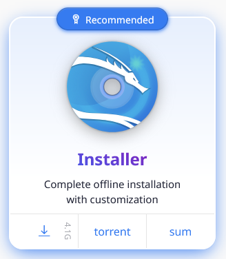

<< Back
Baby's first home lab
27 June 2025 - present
This page is still under construction.
Contents
This is the opening of a new world for me. I’ve been looking into home labs for a little bit, now being fresh out of college, newly minted bachelor’s degree and all. With my summer internship in cybersecurity fading further and further into the past, I hadn’t had the chance since then to “practice” cybersecurity, as it were, until this moment. Now, free of my studies, I have the opportunity at last.
I remember one thing that struck me as particularly intriguing during the internship was vulnerability management. At Aristotle, where I’d interned, pretty much every facet of their infosec protocol was feeding into the same interface — their Security Information and Event Management (SIEM) system, Exabeam — and while that algorithmic smushing did yield a big-picture overview of how those facets came together, I don’t think I really had the time to delve deep into a single particular area. But when I did have some time, I found myself tinkering in Tenable, trawling through that endless, computer-detected list of CVEs and entertaining myself by seeing which ones actually mattered to the company.
As time passes, I can always mold my newfound home lab for other purposes, but for now, I wanted to dig into this fascinating field of vulnerability assessment and management.
Before that, though, I wanted to first get a feel for setting up an absolute barebones network: an internal network within VirtualBox of two VMs — one Kali Linux as the attacker, and one Windows 10 as the target — with manually set IPs.
Downloading Win10 and Kali images
Back to top
I won't spend too much space on the process for downloading the ISO files for Windows 10 and Kali Linux (installer or pre-built VM for VirtualBox), since those instructions are readily available and were followed pretty much as directed. But there are certain considerations that I wanted to mention here:
Zeroeth(?) item should be that my current host machine is a Windows 11 device.
-
Firstly, it is crucial to compare the SHA256 checksums of the downloaded files to ensure they haven't been corrupted in transit. To get the checksum of your downloaded file: go to your Downloads folder, right-click anywhere in the folder and select Open in Terminal. Then run the following command:
Get-FileHash [filename]The checksums for the proper files can be found at the following:
Windows: Provided within ISO installation wizard, in "Verify your download" section
-
Kali: Regardless of installer or pre-built VM, the respective checksum can be found when you click "sum":

Each of these ISOs are just over 4GB, and I am gradually running out of space on this laptop after having used it for four years; so in order to conserve storage I decided to move these ISOs over to a 128GB (really a 116GB) USB stick. But I first needed to format the USB drive first -- I initially didn't recognize this, and kept trying to transfer over, only to repeatedly get the same nonsensical error that there "wasn't enough disk space" on a 116GB drive for a 4GB file. After some digging, I'd had to change the format of the drive from the default exFAT to NTFS. (OS installation media generally requires NTFS as it is a journaled filesystem, meaning changes are logged to prevent potential corruption.)
In installing the Win10 VM, I decided to allocate 1GB of memory (mostly an educated-guess decision based on what resources I know I have on this flimsy laptop; even then it was probably overkill), 1 CPU, and a disk size of 20GB (anything that can accommodate 10,816MB is fine).
For the Kali VM, I allocated 2GB of memory, 1 CPU, and 50GB.
-
The Win10 bootup can be particularly annoying once the VM is up and running. I followed the YouTube channel MyDFIR's stunningly clear video tutorial on the subject, but the gist of it is to state, when prompted, that you don't have a product key, and then to choose Windows 10 Pro as your version.
-
When prompted: "Which type of installation do you want?", select "Custom: Install Windows only (advanced)."

-
When prompted: "How would you like to set up?" choose "Set up for personal use."

-
After that, insist on creating an offline account, then turn OFF all the knobs presented in the "Choose privacy settings for your device" prompt.

-
-
For the Kali bootup, I was prompted with the option for a graphical install or simply "Install", among other options. The graphical install did not work for me, but the normal Install did work.

And there we have it.

Configuring the VMs
Back to top
Now, for this specific situation, of a Win10 machine with nothing on it (albeit with the intentionally weak password "password") and a Kali machine with nothing on it, there wouldn't be any measures we would need to take to ensure the security of this setup. But our endgoal here, for right now, is to add a Metasploitable VM to this network and take some jabs at it in a sandbox environment — which means, we need at least our Kali attacker and the Metasploitable to be able to communicate, while blocking it from the Internet so that it's just me that's doing the jabbing.
This means we need an internal network. Fortunately, VirtualBox gives us the option to do just that. Let's configure our Win10 machine first.
In VirtualBox, click the Win10 machine, then Settings.
Newer versions of VB seem to have separated these settings into Basic and Expert. The option to switch to an internal network is only available in "Expert," so click that. (Older tutorials fail to mention this.)
Scroll down to the Network section or simply click the "Network" tab on the left sidebar. From there, in the "Attached to:" dropdown, select "Internal network." Right below that, you can name this internal network whatever you'd like. I called mine "qkrnet".
Once you're done, click OK.
Repeat these steps to configure the Kali machine the same way. For the Kali machine, once you switch it to an internal network you will only need to select the name of the existing internal network from the dropdown, in my case "qkrnet."
Now, we still need to statically set the IP for each VM.
Again, let's do the Win10 machine first:
-
Once logged in, right-click the globe icon on the bottom right, then click "Open Network & Internet settings."

-
Then click "Change adapter options."
-
Right click on the "Ethernet" item, then click "Properties."
-
Double-click on "Internet Protocol Version 4 (TCP/IPv4)."
-
Select the "Use the following IP address:" option, then manually set the IP address. A /24 subnet is fine. I chose 192.168.31.10/24. Then press OK, and OK on the previous screen. Leave all else unchanged.

-
Open cmd and run
ipconfigto confirm the static IP has been set.
Now let's do the same in our Kali VM:
-
Once logged in, right-click the Ethernet button (for me this was still loading as the VM was attempting to find a nonexistent Internet connection, but process of elimination made it obvious that was the button to press), then click "Edit Connections..."
-
Select (single-click) "Wired connection 1" to highlight it, then click the gear icon on the bottom left of that window.
-
Navigate to the "IPv4 Settings" tab. Notice that the default Method is set to DHCP; open that dropdown and select "Manual." Then under Addresses, click the "Add" button, and the desired static IP for this machine — preferably one higher than what you set for the Win10 machine. In my case, that would be 192.168.31.11. Then press Tab; the netmask should automatically appear as 24. Leave all else unchanged, and press Save.

Now let's check that the two VMs are interconnected. Unfortunately, the firewall on the Win10 machine doesn't allow ICMPs from the Kali machine to the Win10 machine, but if we ping Kali from the Win10, we will see that the pings do go through. (In my case, when I tried immediately after I'd set the Kali IP, it took a while for pings to go through as the change was still taking effect.)

Now we have a basic home lab, with an attacker machine (Kali) and a defender machine (Win10). With everything in line, I made sure to take snapshots of the VMs' current states, and note them down as a default state that I can always come back to. From here we could go anywhere: we could start running this very setup as a malware analysis lab (something I do intend to do very soon); we could open the network back up to the Internet by changing the configurations back to NAT or a bridged network; and so on. But right now, as a first little exercise, I want to add a Metasploitable VM to this network and see what I can find.
Adding the Metasploitable VM
Back to top
Now begins the real deal. I want to get an intentionally vulnerable system onto my new internal network so that I can take a look at what it is that makes it vulnerable exactly, and then see what I can do using those vulnerabilities (whether it be remedying them or abusing them). The mindset I'm trying to get into here is that this machine is indeed a client's actual machine, and my actions with this machine are performed with the endgoal of producing a report for the client to read and truly understand the risks, as well as the importance of minimizing those risks.
The Metasploitable series of systems is exactly what I need for this task. In this section we'll be dealing with Metasploitable 2, as it is easier to build than the original; there is also a newer Metasploitable 3 but for now we'll stick to the former and see what we can do with it.
Installing Metasploitable 2
Rapid7 offers two links for downloading Metasploitable 2 (I'll shorten as MS2 going forward), but the one that I got to work was the second, via SourceForge. The file is a 800MB zip file, that even without unzipping I was able to double-click to preview the contents and pull just the 1GB .vmdk file out to my USB drive containing my other VM disks.

Evidently, this renders my name for the USB drive useless, but it gets the point across so at this point I'm keeping it.
But where this new file format does matter (since it is a VMWare file format) is in getting VirtualBox to run this file when, at least upfront, it only accepts ISO files. This is where the tiniest bit of trickery comes in (credit to this article from Chron):
-
Create a new virtual machine, set to Linux but without selecting an ISO image. Then click Finish. But do NOT start the VM yet.
-
Now go to the Settings for that new VM. Under the Storage section, when you click to highlight the row "Controller: SATA" there should be two buttons that appear to the right. If you hover over the rightmost of those buttons, it should read "Adds hard disk." Click that button. Then click the "Add" button at the top left of that new window, at which point File Explorer will open and you can select the vmdk file wherever you stored it. Then press OK to save. Make sure to DELETE the existing .vdi file under "Controller: SATA" so that VirtualBox knows to pull only from the .vmdk file.

-
We'll follow the same steps as before to add the MS2 VM to the internal network, making sure to select the name of our actual network from earlier.
Again, one last step here to actually add the MS2 VM to our qkrnet intnet: Bootup the MS2 VM, login with msfadmin:msfadmin, then run ifconfig -a. You should notice there's an IPv6 address, but no IPv4.

The sudo is unnecessary in that first instance, but we will need root access to actually set the IPv4 address. In my case, since I want to set it to 192.168.31.12: sudo ifconfig 192.168.31.11 netmask 255.255.255.0 Then run ifconfig -a again to confirm the change.

Let's have Kali (which you should now boot up) and MS2 ping each other to confirm they're interconnected.

Now our intnet infrastructure looks something like this:

First impressions with nmap
Back to top
Just to get a feel for what we're dealing with, I ran the most basic nmap scan of the MS2.
Basically every port that could possibly be open is open. This is rich with opportunities for potential exploits, and to go through each port to see what we could find is a little time-consuming, and frankly overwhelming. To make things a little more clear, I ran nmap again but with a few added specifications:
nmap -sS -sV --script vuln 192.168.31.12 > ~/Desktop/nmapoutput.txt-sS: "stealth" scan/TCP SYN scan, more unobtrusive as it doesn't complete TCP connections. Since the connections is never completed, it becomes more likely that OSs or IDSs don't log the connection as a full session, if they log it at all; it also blends in more easily to regular traffic, since legitimate users also send SYN packets.-sV: version detection.--script vuln: Runsvulnscript that prints details about each detected vulnerability.> ~/Desktop/nmapoutput.txt: sends the output to a txt file.
Here's the first few lines of that output (entire output here). I've included just enough to see one example of what the vuln script outputs for a vulnerability.
Starting Nmap 7.95 ( https://nmap.org ) at 2025-06-30 12:19 PDT
Nmap scan report for 192.168.31.12
Host is up (0.000093s latency).
Not shown: 977 closed tcp ports (reset)
PORT STATE SERVICE VERSION
21/tcp open ftp vsftpd 2.3.4
| ftp-vsftpd-backdoor:
| VULNERABLE:
| vsFTPd version 2.3.4 backdoor
| State: VULNERABLE (Exploitable)
| IDs: BID:48539 CVE:CVE-2011-2523
| vsFTPd version 2.3.4 backdoor, this was reported on 2011-07-04.
| Disclosure date: 2011-07-03
| Exploit results:
| Shell command: id
| Results: uid=0(root) gid=0(root)
| References:
| https://github.com/rapid7/metasploit-framework/blob/master/modules/exploits/unix/ftp/vsftpd_234_backdoor.rb
| https://cve.mitre.org/cgi-bin/cvename.cgi?name=CVE-2011-2523
| http://scarybeastsecurity.blogspot.com/2011/07/alert-vsftpd-download-backdoored.html
|_ https://www.securityfocus.com/bid/48539
22/tcp open ssh OpenSSH 4.7p1 Debian 8ubuntu1 (protocol 2.0)
23/tcp open telnet Linux telnetd
...
Having first turned on the shared clipboard in the Kali VM to be bidirectional, I copied the entire contents of nmapoutput.txt to a txt file on my host machine. Our goal at this point is turn this 461-line output into something more readable. What immediately comes to mind is to collect some crucial info about each vulnerability into a table or spreadsheet. (While we do that, we can shut down our VMs for now, as we want to avoid having the MS2 on when it's not being used.)
| port | CVE | state | description | references |
|---|---|---|---|---|
| 21/tcp | CVE-2011-2523 | VULNERABLE (Exploitable) | vsFTP vrsion 2.3.4 backdoor | https://github.com/rapid7/metasploit-framework/blob/master/modules/exploits/unix/ftp/vsftpd_234_backdoor.rb |
| | https://cve.mitre.org/cgi-bin/cvename.cgi?name=CVE-2011-2523 | ||||
| | http://scarybeastsecurity.blogspot.com/2011/07/alert-vsftpd-download-backdoored.html | ||||
| |_ https://www.securityfocus.com/bid/48539 | ||||
| 25/txp | CVE-2014-3566 | VULNERABLE | SSL POODLE information leak | https://www.openssl.org/~bodo/ssl-poodle.pdf |
| | https://www.imperialviolet.org/2014/10/14/poodle.html | ||||
| | https://www.securityfocus.com/bid/70574 | ||||
| |_ https://cve.mitre.org/cgi-bin/cvename.cgi?name=CVE-2014-3566 | ||||
| 25/tcp | n/a | VULNERABLE | Anonymous Diffie-Helman Key Exchange MitM Vulnerability | https://www.ietf.org/rfc/rfc2246.txt |
| 25/tcp | CVE-2015-4000 | VULNERABLE | Transport Layer Security (TLS) Protocol DHE_EXPORT Ciphers Downgrade MitM (Logjam) | https://cve.mitre.org/cgi-bin/cvename.cgi?name=CVE-2015-4000 |
| | https://www.securityfocus.com/bid/74733 | ||||
| | https://weakdh.org | ||||
| 25/tcp | n/a | VULNERABLE | Diffie-Hellman Key Exchange Insufficient Group Strength | https://weakdh.org |
| 80/tcp | CVE-2007-6750 | VULNERABLE | Slowloris DOS attack | http://ha.ckers.org/slowloris/ |
| |_ https://cve.mitre.org/cgi-bin/cvename.cgi?name=CVE-2007-6750 | ||||
| 80/tcp | n/a | n/a | http-enum | /tikiwiki/: Tikiwiki |
| | /test/: Test page | ||||
| | /phpinfo.php: Possible information file | ||||
| | /phpMyAdmin/: phpMyAdmin | ||||
| | /doc/: Potentially interesting directory w/ listing on 'apache/2.2.8 (ubuntu) dav/2' | ||||
| | /icons/: Potentially interesting folder w/ directory listing | ||||
| |_ /index/: Potentially interesting folder | ||||
| 1099/tcp | n/a | VULNERABLE | RMI registry default configuration remote code execution vulnerability | https://github.com/rapid7/metasploit-framework/blob/master/modules/exploits/multi/misc/java_rmi_server.rb |
| 5432/tcp | n/a | VULNERABLE | Diffie-Hellman Key Exchange Insufficient Group Strength | https://weakdh.org |
| 5432/tcp | CVE-2014-3566 | VULNERABLE | SSL POODLE information leak | https://www.openssl.org/~bodo/ssl-poodle.pdf |
| | https://www.imperialviolet.org/2014/10/14/poodle.html | ||||
| | https://www.securityfocus.com/bid/70574 | ||||
| |_ https://cve.mitre.org/cgi-bin/cvename.cgi?name=CVE-2014-3566 | ||||
| 5432/tcp | CVE-2014-0224 | VULNERABLE | SSL/TLS MITM vulnerability (CCS Injection) | http://www.cvedetails.com/cve/2014-0224 |
| | http://www.openssl.org/news/secadv_20140605.txt | ||||
| |_ https://cve.mitre.org/cgi-bin/cvename.cgi?name=CVE-2014-0224 | ||||
| 8180/tcp | n/a | n/a | http-enum | /admin/: Possible admin folder |
| | /admin/index.html: Possible admin folder | ||||
| | /admin/login.html: Possible admin folder | ||||
| | /admin/admin.html: Possible admin folder | ||||
| | /admin/account.html: Possible admin folder | ||||
| | /admin/admin_login.html: Possible admin folder | ||||
| | /admin/home.html: Possible admin folder | ||||
| | /admin/admin-login.html: Possible admin folder | ||||
| | /admin/adminLogin.html: Possible admin folder | ||||
| | /admin/controlpanel.html: Possible admin folder | ||||
| | /admin/cp.html: Possible admin folder | ||||
| | /admin/index.jsp: Possible admin folder | ||||
| | /admin/login.jsp: Possible admin folder | ||||
| | /admin/admin.jsp: Possible admin folder | ||||
| | /admin/home.jsp: Possible admin folder | ||||
| | /admin/controlpanel.jsp: Possible admin folder | ||||
| | /admin/admin-login.jsp: Possible admin folder | ||||
| | /admin/cp.jsp: Possible admin folder | ||||
| | /admin/account.jsp: Possible admin folder | ||||
| | /admin/admin_login.jsp: Possible admin folder | ||||
| | /admin/adminLogin.jsp: Possible admin folder | ||||
| | /manager/html/upload: Apache Tomcat (401 Unauthorized) | ||||
| | /manager/html: Apache Tomcat (401 Unauthorized) | ||||
| | /admin/view/javascript/fckeditor/editor/filemanager/connectors/test.html: OpenCart/FCKeditor File upload | ||||
| | /admin/includes/FCKeditor/editor/filemanager/upload/test.html: ASP Simple Blog / FCKeditor File Upload | ||||
| | /admin/jscript/upload.html: Lizard Cart/Remote File upload | ||||
| |_ /webdav/: Potentially interesting folder | ||||
| 8180/tcp | CVE-2007-6750 | LIKELY VULNERABLE | Slowloris DOS attack | http://ha.ckers.org/slowloris/ |
| |_ https://cve.mitre.org/cgi-bin/cvename.cgi?name=CVE-2007-6750 |
test